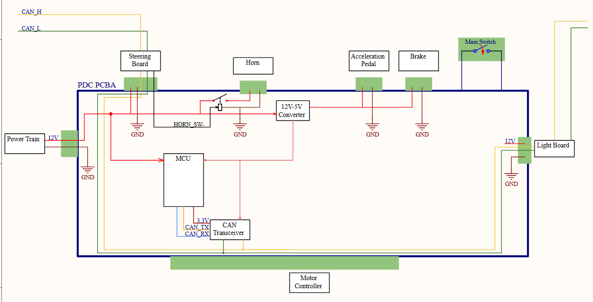
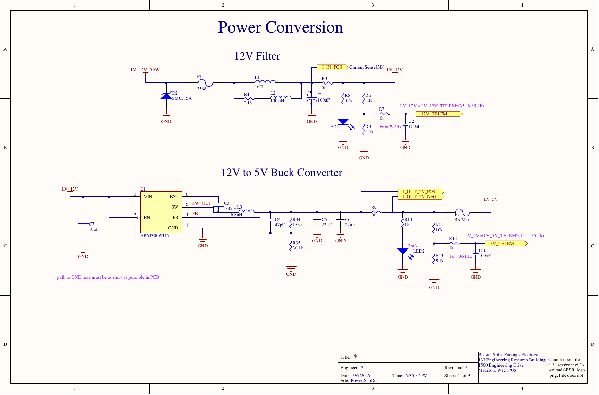
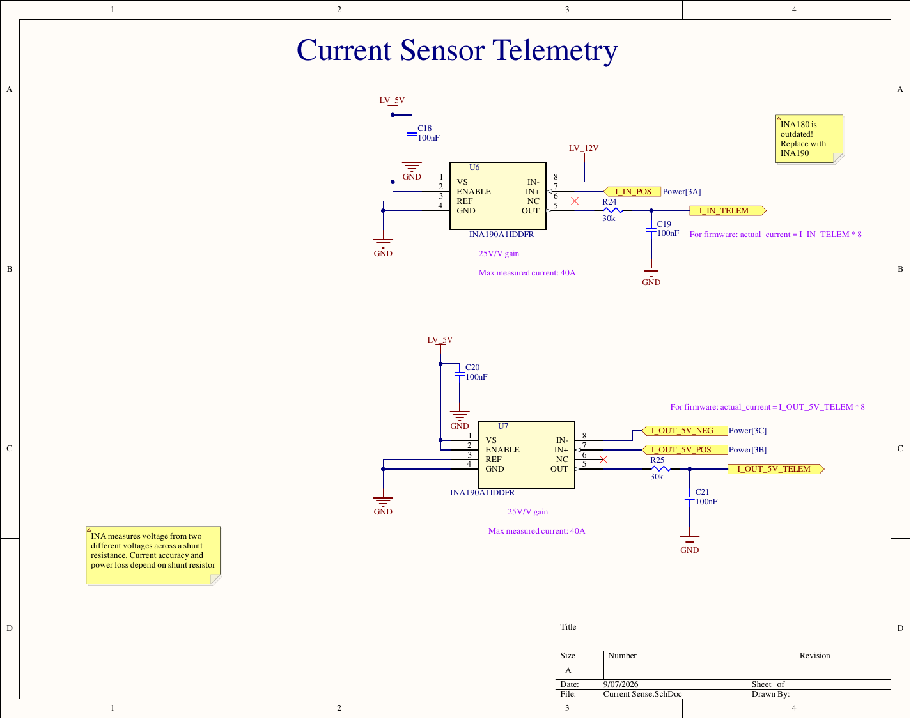
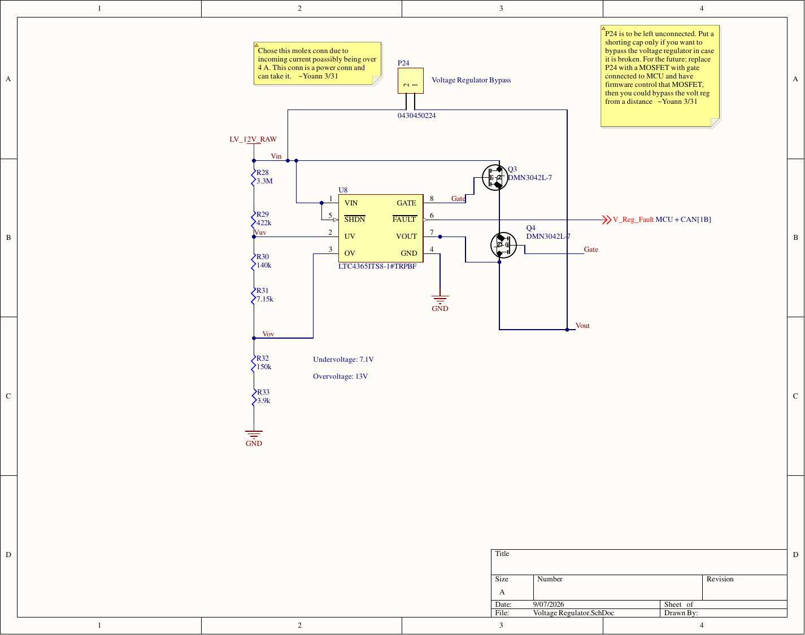
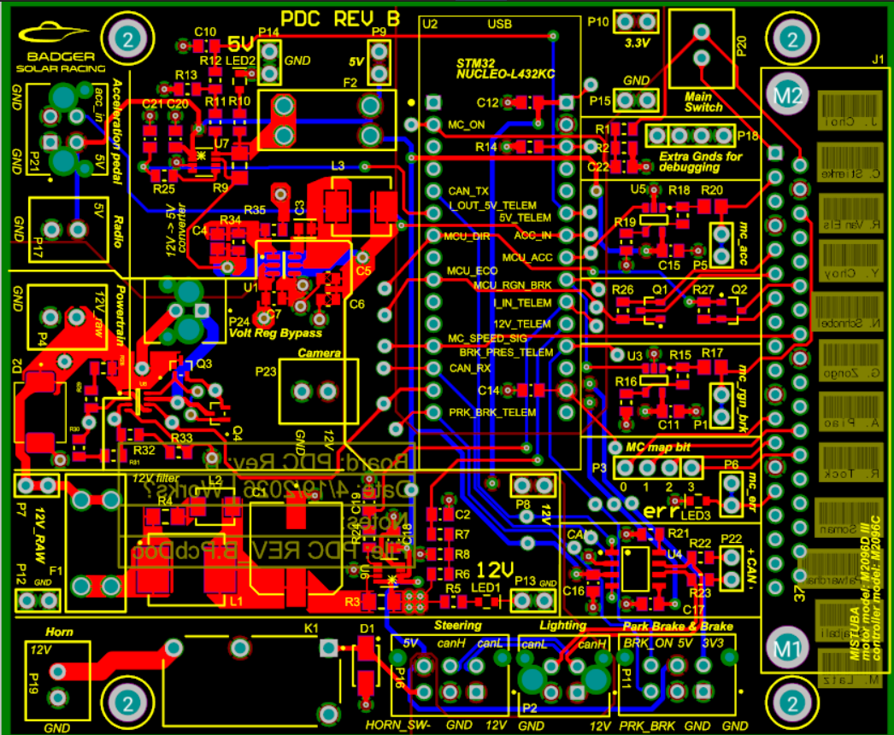
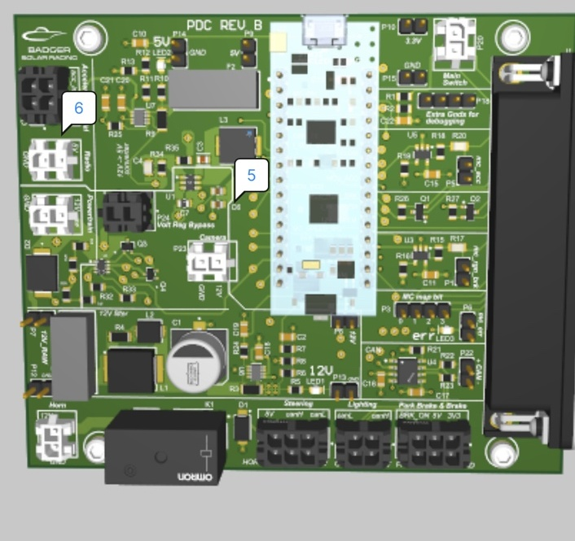
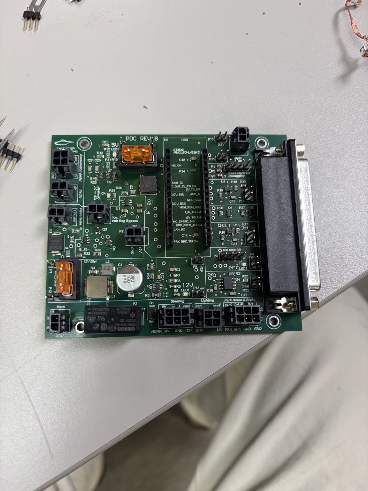
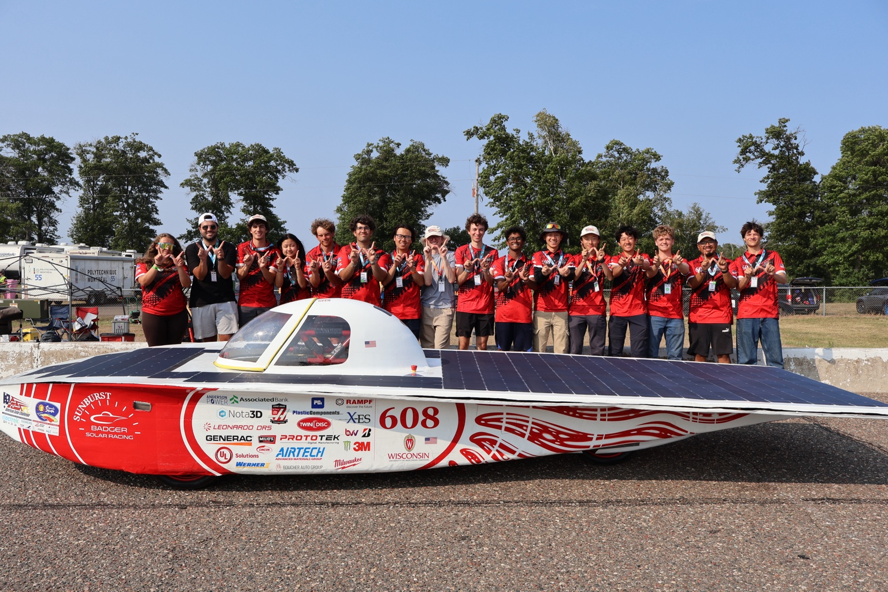

Where the PDC sits in the vehicle.
The PDC sits between the low-voltage powertrain, motor controller, steering board, lighting system, pedals, horn, and CAN network. It distributes regulated power, carries control and telemetry signals, and provides the interface between the MCU and motor controller.
Rev B kept the existing MCU/CAN architecture and motor-controller interface, and focused on making the board's power delivery, observability, and protection more robust for competition use.

What I redesigned versus what I inherited.
The MCU/CAN architecture, motor-controller interface, and several peripheral interfaces carried over from the previous board revision. My work on Rev B was scoped to the sections below.
- 12 V → 5 V buck regulator: ran component trade studies and selected a 3 A synchronous buck converter, cutting the stage's footprint ~60%
- Simulated and validated the voltage-regulation circuitry in Spice, evaluating MOSFET alternatives before committing to layout
- Shunt-based current-sensing telemetry circuitry
- Dedicated test points on key rails and signals
- Voltage protection / regulation circuit
- TVS transient protection on the input path
- MCU (STM32 Nucleo) and CAN transceiver architecture
- Motor-controller interface and drive-signal opamps
- Steering, pedal, horn, and lighting connector interfaces
- Overall board form factor and connector layout

A dedicated buck stage for the 5 V rail.
I ran component trade studies and selected a 3 A synchronous buck regulator, sizing the surrounding inductor, output capacitors, and feedback network for the board's 5 V rail. The chosen part cut the stage's footprint by roughly 60% versus the prior approach, freeing board space I used for the new current-sensing telemetry and input protection circuitry.
Before committing to layout, I simulated the voltage-regulation circuitry in Spice, evaluating MOSFET alternatives and circuit behavior under expected load conditions. In layout, I kept the switching node, inductor, and output capacitors close together to minimize loop area, and routed the high-current path directly rather than through shared ground pours, since this stage feeds logic and sensor supplies elsewhere on the board.
Current and voltage telemetry for the MCU.
I added shunt-based current sensing using dedicated current-sense amplifiers on the 12 V and 5 V rails, feeding the MCU so board current draw can be observed in firmware.
Combined with voltage-divider telemetry on the same rails, this gives the low-voltage system visibility it didn't have before — useful both for live monitoring and for narrowing down faults during bring-up.


Designed for faults, not just nominal operation.
The input path includes a TVS diode and a dedicated voltage protection stage, giving the board a defined response to out-of-range supply conditions instead of relying on downstream regulators to tolerate them.
Test points, added on purpose.
Power rail test points
Exposed test points on the 12 V, 5 V, and 3.3 V rails so bring-up checks don't require probing fine-pitch component pads.
Signal test points
Added access on key control and telemetry signals to make fault isolation faster during bench and in-car debugging.
The goal was straightforward: less time hunting for a probe point mid-debug, more time actually diagnosing the fault.
From layout to assembled hardware.



Staged integration, one step at a time.
Bench checks
Continuity, short, assembly, and rail checks on the standalone PCB.
Lab supply
Powered the board from a controlled supply and verified behavior under known conditions.
LV integration
Connected the board to the rest of the low-voltage system and checked subsystem interactions. Later replaced a failed CAN transceiver on the PDC during this stage.
In-car validation
Completed final validation with the board installed in the vehicle.
Part of a low-voltage system that held up at competition.
As part of the broader low-voltage system and team effort, Badger Solar Racing completed more than 200 miles at Formula Sun Grand Prix 2026 with zero LV failures, placed 16th of 36 teams in the SOV class, and qualified for the American Solar Challenge for the first time in team history.
